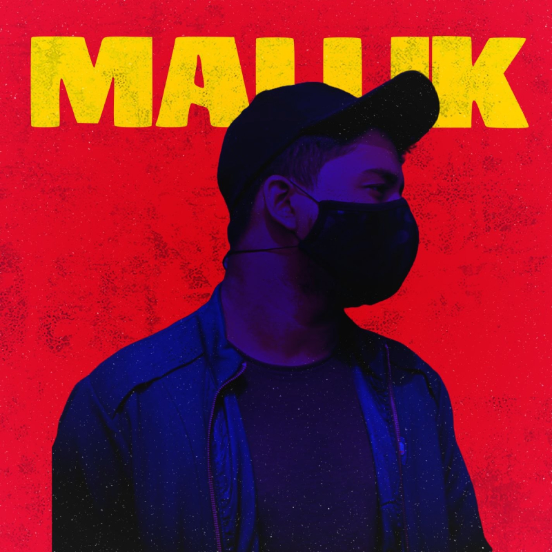
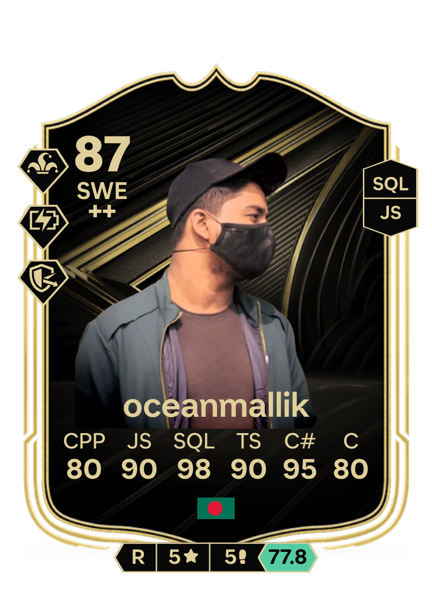

Developer Profile
A quick peek into my background, technical skillset, educational qualifications, and development journey.

Software Engineer in Training • DIU
Hello visitor, I’m Ocean, a Software Engineering student at Daffodil International University. I enjoy using computers, exploring new ideas, and tinkering with anything that sparks my interest. From building cross platform mobile apps like DIU Notes Buddy to experimenting with Godot for indie games and developing open source tools, I am continuously learning and building.
